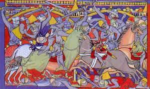

Kempennet gant Laura W. Taylor (1865)


|
I
1.Ar miz meurzh gant e vorzolioù, A zeu da skei war on norioù; Ar gwez a bleg gant glao a-builh; An doenn a strakl gant ar grizilh. 2.Ar miz meurzh gant e vorzholioù, A zeu da skei war hon norioù; Ar gwez a bleg gant glav a-builh; An doenn a strakl gant ar grizhil. 3.Hogen n'eo ket e vorzholioù Hepken, a sko war hon norioù; Ned eo ket ar grizhil hepken A lak da strakal an doenn; 4.Ned eo ket hepken ar grizhil; N'eo ket ar glav a zarc'h a-builh; Gwasoc'h eget avel ha glav Ar Saozon fall an hini eo ! II 5.— Aotrou sant Kado, hor paeron, Roit-hu deomp-ni nerzh ha kalon. Ma c'houneimp, hirio an deiz, War enebourien eus a Vreizh. 6.Mar deomp-ni d'ar gêr war hor c'hiz, Ni a roy deoc'h-hu ur gouriz, Hag ur chupenn aour, hag ar c'hleñv, Hag ur vantell c'hlas liv an neñv; 7.Ma laro an dud, o sellet, Aotrou sant Kado benniget: “Koulz er bar'oz hag en douar, Sant Kado n'en deus ket e bar” III 8.— Lavar din-me, lavar din-me, Pet zo an'he, va floc'hig-me ? — Pet zo an'he leverin deoc'h: Unan, daou, tri, pevar, pemp, c'hwec'h; 9.Pet zo an'he leverin deoc'h: Pet zo an'he, aotrou : pemp, c'houec'h, Seizh, eizh, nav, dek, unnek, daouzek, Trizek, pevarzek ha pemzek. |
10.Pemzek ! ha lod all c'hoazh war-lerc'h:
Unan, daou, tri, pevar, pemp, c'hwec'h, Seizh, eizh, nav, dek, unnek, daouzek, Trizek, pevarzek ha pemzek. 11.— Mard int tregont koulz eveldomp, A-raok ! paotred, ha bec'h warnomp ! Prim d'ho c'hezek gant ar skourjez ! Na zebrfont ken glas hor segal !- 12.Ker buan a goue'e an taolioù Ha morzholioù war annevioù Ker koeñvet a rede ar gwad Hag ar wazh goude ar barrad; 13.Ha ken didammet an harnez Eget pilhennoù ar paour-kaezh; Ha klemm ar varc'heien er c'hloaz, Ker rust eget mouezh ar mor bras. IV 14.Pennbroc'h a lavare neuze Da Dinteniag, pa dostae : - Dal taol ma goaf mat, Tinteniag; Daoust hag eo eñ ur gorsenn wak ? 15.- Pezh a vo gwak, e-berr amzer: Podenn da benn, va mignon kaer; Meur a vran a skrapay ennañ Ha bekay bouedenn anezhañ.- 16.Oa ket e gomz peurlavaret, Un taol morzhol de'añ en deus roet, Ken a flastras, 'vel eur melc'houedenn, E dok-houarn kelkoulz hag e benn. 17.Ha Kerarreiz, dal' m'her gwelas, A skrign e galon a c'hoarzhaz: - Mar chomfent holl, evel hemañ, Gounit e rafent ar vro-mañ.- 18.- Pet an'he zo marv, floc'h mat ? - Ne welan tra gant poultr ha gwad. - Pet an'he zo marv, floc'hig ? - Setu pemp, c'hwec'h, seizh, marv-mik.- |
V
19.Adalek goulouig an deiz, En em gannont betek kreisteiz; Adalek kreisteiz betek noz, En em gannont enep ar Saoz. 20.Ha 'n Aotrou Robart lavaras : - Sec'hed am eus, ya, sec'het bras ! Ken a droc'has outañ Ar-C'hoad: - Mar 't eus sec'hed, paotr, ev da wad ! 21.Ha Robart, pa'n deus e glevet, gant ar vezh tec'hiñ en deus graet, Ha war ar Saozon emañ koue'et, Ha pemp an'he en deus lazhet. 22.- Lavar din-me, lavar din-me, Pet zo an'he c'hoazh, va floc'h-me ? - Aotrou, lavaret a rin deoc'h: -Unan, daou, tri, pevar, pemp, c'hwec'h. 23.- Ar re-mañ a vo laosket bev, Ha kant gwenneg aour a baeo, Kant gwenneg aour-flamm, peb unan, Abeg da vijoù ar vro-mañ.- VI 24.Kar d'ar Vretoned na vije, E kêr Joslin neb na youe, O welet hor re 'tont en-dro, Bleun banal ouzh ho zok-houarnoù; 25.Na vije kar d'ar Vretoned, Na d'ar sent a Vreizh kennebeud, Neb na veule ket sant Kado, Paeron brezelourien ar vro; 26.Neb n'estlamme, neb na youe, Neb na veule, neb na gane: “Koulz er bar'oz hag en douar, Sant Kado n'en deus ket e bar” |